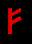
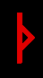
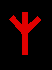
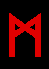
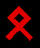

FEHU
Germanic: Fe (Fehu)
Gothic: Faihu
Norse: Fé
Anglo-Saxon: Feo,
Feoh
Icelandic: Fé
Norwegian: Fe
# 1. This rune begins the Futhark alphabet and is the first of the three ættir.
Characterizes the beast of burden. Slavish, stupid, slow, domesticated and mild.
Cowardly. This is the sending rune used in magick. To grow, to wander to destroy
Positive aspects; white magick:
Wealth, possessions, honors, property,
money, expansion. Power over one’s environment, increase in wealth; fertility,
mobility.
Black Magick: Instills cowardliness, dullness, breaks the spirit,
binds an enemy; instills fear and dependence in an enemy.
ÜRUZ,
AUROCHS
Anglo-Saxon: UR
Germanic: Uraz (Uruz)
Gothic: Urus
Norse: Úr
Anglo-Saxon: Ur
Icelandic: Úr
Norwegian: Ur
# 2. Aurochs is a species of wild ox that lived in the European forests. By the
1600’s it was hunted to extinction. This rune is the cosmic seed, beginnings and
origins. It is masculine in nature and gives strength, endurance and
athleticism. It is a rune of courage and boldness, freedom and rebellion. Ur
represents the horn or the erect phallus, resurrection, life after death.
Coming, being and passing away.
White Magick: Incites action, sexual
potency. Freedom.
Black Magick: Used to threaten and destroy.
Magick:
transfer of energies, used for projecting or drawing in of energy. Repeated use
of the rune will gradually increase the amounts of energy one can handle at any
given time. Helps in the growth of one’s own reserves of power. When using Fa
with another rune, it works to increase the power of any rune it is used with
for good or ill. Adepts can combine the forces of Fa with the forces of Isa
(fire and ice), but this could prove disastrous for the uninitiated. Green and
shimmering gold work well with the energies of this rune.

THURISAZ(Thorn)
Germanic: Thyth (Thurisaz)
Gothic Thauris
Norse: Þurs
Anglo-Saxon: þorn
Icelandic: Þurs
Norwegian: Thurs
#3. Rune of cutting, sharpness, and pain. Brute strength, destructive power of
chaos and ruin. Also of death and regeneration, transformation and breaking down
barriers. The power of this rune is wild and a strong mind/will is needed to
direct it. Ur assists the energy of other runes it is used with to manifest in
reality. Like a lightning bolt, Thorr brings on the energies of the berserker,
energies this wild should only be used in war or attack. Can raise and guide
thunderstorms and direct lightning. In many German fairy tales such as “Sleeping
Beauty” the prick of a thorn, pin or spindle casts a spell upon the victim. The
bloodstone has been used with this rune in the raising of thunderstorms.
Hematite used with this rune can shield against electro-magnetic energies and is
therefore helpful in deflecting curses. Using this rune with a pointed crystal
focuses energies and projects them.
Black Magick: Brings destruction and
confusion. Thorr is used in the destruction of enemies and in curses. Used to
control another or render the individual defenseless.
White Magick: Rune of
healing. Enhances wisdom, courage, physical strength, independence and
leadership.
ANSUZ (God)
Germanic: Aza (Ansuz)
Gothic: Ansus
Norse: Óss, Áss
Anglo-Saxon:
Aesc, (Os, Ac)
Icelandic: Óss, Áss
Norwegian: As
#4. Rune of the power of speech, destroys tyranny; “Your spiritual force sets you free” Order, the opposite of chaos, creative inspiration, magickal oratory ability and to persuade others and audiences through speech. Opens channels of self-expression and overcomes obstacles of every kind. Used in removing bindings. Assists in enhancing one’s psychic and magickal abilities. Also used for work in invocations. Used with Lapis Lazuli in working to communicate with Demons.
RAIDHO
(Riding, travel)
Germanic: Reda (Raidho)
Gothic: Raida
Norse: Reið,
Reiðr
Anglo-Saxon: Rad
Icelandic: Reið
Norwegian: Reid, Reidr
#5. Rune of travel, journeys, and physical endurance. This rune has been used as a charm for travelers, this includes astral travel as well and Reidh acts as a guide for the dead in their journey in the underworld. This is also a rune of relocation such as moving house. Reidh also means seeking and striving; a quest and stepping into the unknown. Magickally this rune when the energies are directed at another will make him/her restless and dissatisfied. It creates changes in the life for good or ill depending on the other runes used in the working. Reidh is a solar rune as it also symbolizes the chariot of Amon Ra, the Egyptian Sun God and represents the eightfold cycle of the Greater Sabbats. Reidh also assists in astral travel. A rune of rhythm and music, Reidh makes one aware of the natural rhythms in life and helps one to better organize their time. This rune represents justice and the essence of the law, while Tyr is the letter of the law. Can be used in ritual to give power to movement- drumming, dancing, clapping, etc.
KENAZ (Torch)
Germanic: Chozma (Kenaz)
Gothic: Kaun
Norse: Kaun
Anglo-Saxon:
Cen, Ken
Icelandic: Kaun
Norwegian: Kaun
#6. Rune of light. The light of the soul; also intellect. The traveler on the road to the underworld carried Kaun to illuminate and guide. The shape of this rune is of a delta for smooth flight and also penetrating. Magically this rune can be used for intellect, penetrating things as it carries energy. It also increases awareness and gives insight. In black magick, it is used to incite stupidity and works so that the victim will remain unaware. This rune also represents sores, inflammations, swelling and boils. Used for the control and harnessing of sexual energies and in working sex magick, often used with other fire runes and used to release the spirit into the realms of power. This rune can be used to direct and influence the emotions of others. Bestows charisma which is connected to the sexual energies. Useful in raising the kundalini. Fire agate and fire opal can be used with this rune, especially when working sex magick.
GEBO (Gift)
Germanic: Geuua (Gebo)
Gothic Giba
Norse: Gipt, Giöf
Anglo-Saxon: Geofu (Gyfu)
Icelandic: Gjöf
Norwegian: Giof
#7. This is a rune of sacrifice and giving. Something of personal value given
freely, such as our blood when we choose to consecrate the runes in this way.
This is a rune of initiation where we make personal sacrifices to obtain
knowledge, power and wisdom. No pain, no gain.
Magickally, Gipt is a bringer
of gifts. Gipt relates to weddings and alliances. Gipt is also used in sex
magick and binding spells. Can be used to bind another to an unwanted obligation
and can be used in casting love spells. Emerald and jade are the gems used with
this rune. When used in Black Magick, it brings pain and sacrifice upon the
victim with no reward. Used with the Isa rune, the combination is powerful in
binding enemies.
WUNJO
Germanic: Uuinne (Wunjo)
Gothic: Winja
Norse: Vend
Anglo-Saxon:
Wynn
Icelandic: Vin
Norwegian: Wynn
#8. Wunjo is a rune of honors and rewards. Our efforts are rewarded. Vend is bliss merging with light. Authority, respect and strength. This rune is excellent for banishing depression. Helps to unite family members and mend friendships. Breaks down barriers between one’s self and others. When directed for black magick, this rune can be used to instill overconfidence and trust of the wrong things in others, leading to their downfall. Vend is also a rune of healing as it binds the healing of the mind with the healing of the physical self. Wards off diseases. Good for working with the heart chakra. Topaz enhances this rune as well as rose quartz. Good for raising confidence and self-esteem.
HAGL
(Hail)
Germanic: Haal (Hagalaz)
Gothic Hagl
Norse: Hagall
Anglo-Saxon: Hægl
Icelandic: Hagall
Norwegian: Hagall, Hagl
#9. This rune represents hailstones. Involuntary sacrifice with no reward; a rune of suffering and injustice. A rune of destruction, disaster and violence. This rune is mainly used in black magick sending destruction in the form of whatever runes are used with it, delivering violent loss and pain. Hagl is a rune of completion and the number nine. Nine is the greatest German number of power and is also a number of Satan, as it equals the number of the main chakras.
NAUTHIZ
(Need)
Germanic name: Noicz (Nauthiz)
Gothic: Nauths
Norse name:
Nauð, Nauðr
Anglo-Saxon name: Nied (Nyd)
Icelandic name: Nauð
Norwegian name: Naudr, Naud
#10. Nauthiz is a rune of endurance and will. The mental strength to last. It represents the dark night of the soul. It is connected to the Hagl rune. When used in white magick, this rune gives defiance and the strength to carry on when all hope seems lost. It is a rune of survival and fearlessness in the face of death. When directed at another, this rune can give the spiritual strength to carry on and endure in the face of disaster. Used in black magick, it brings suffering and hardship. Naudh is a rune of friction and resistance. A rune of banishings and cleansing by fire. Naudh can be used in counter-spells. Develops the will and self-sufficiency. The rune of trial and testing. Obsidian is the gem used with this rune. Obsidian is also the gem of the planet Saturn which bestows hardship and endurance.

ISA (Ice)
Germanic: Icz (Isa)
Gothic Eis
Norse: Íss
Anglo-Saxon: Is
Icelandic: Íss
Norwegian: Is
#11. Isa is a rune of binding. It represents stealth and sneakiness and is used in
operations where one wishes to proceed undetected; Iss bestows invisibility. In
nature, ice creeps up on the land, quietly freezing and immobilizing everything
in its path. The unaware fall victim to it. Magickally, Iss is a rune of binding
and preventing action through hidden means. It can halt a plan and prevent
something from developing. It is used to conceal and can render a victim unaware
of impending personal disaster to where any actions attempted will be too late
in coming. It is also used in preventing any action and can ruin planned
activity. Isa freezes action and is the rune of cold, barren stillness and
death. Isa is the exact opposite of Fehu. As Fehu is a rune of movement, Isa is
a rune of binding.
Used in ritual against another, it brings barrenness,
prevents prosperity, causes depression, and serves as an obstacle to action. Can
be used to cause paralyzing fear or obsession and to prevent or stop movement,
both that of growth and disintegration. On a more positive note, this rune is
helpful in void meditation as it acts to still and also helpful in
concentration, bringing calmness and guidance. Care needs to be taken as the
rune can also make the user dull and/or obsessive. Isa works to calm hysteria,
hyperactivity and restlessness. Often used in revenge spells and defense, it
helps focus the will of the operator. Used with other runes, it acts to bind and
shield the energies and keep them from interacting with each other.
JERA (Year)
Germanic name: Gaar (Jera)
Gothic: Jer
Norse: Ár
Anglo-Saxon:
Ger (Jara)
Icelandic: Ár
Norwegian: Jara, Ar
#12. Jera is a rune of cycles and is symbolic of the harvest where the efforts of planting and work in the fields are rewarded with crops. Ar represents the cycles of change. Life cycles, lunar cycles, the cycles of the seasons and changes. Ar is in contrast to Iss where everything stops. It signifies the return of the Sun and brings action. Ar symbolizes a vortex of cycling energy; the eight-fold wheel of life, the point inside of the circle, which is the glyph for the Sun meaning regeneration. When used in magickal operations, it can bring a reversal of personal fortunes. Like the Tarot Card, the Wheel of Fortune, Ar can reverse circumstances so misfortune is replaced with luck and visa-versa. Rune of patience and awareness, moving in harmony with natural cycles. This rune is excellent for working with nature and is a rune of fruitfulness. Ingwaz is the seed planted, Berkano is the earth that receives it and Jera is the growth and the harvest. A rune of long term planning and persistence and ensures the success of plans. This rune is also helpful as it serves as a guide in the correct timing of rituals, especially initiation. When used in black magick, this rune can bring the worst possible aspects of an individual’s wyrd to manifest and develops the forces of self-destruction. The stone is moss agate.
EIHWAZ
Sound: Ë
Germanic: Ezck (Eihwaz)
Gothic: Eiws
Anglo-Saxon: Yr
(Eoh)
Norwegian: (Eo)
#13. Used in necromancy (communicating with the dead). It is a rune of death and power over the dead. Eihwaz strengthens the will and can be used in past life regressions to gain knowledge and wisdom from prior lives. Represents the kundalini force. This rune shields the soul through all kinds of hardship. Like the planet Pluto, it is a rune of transformation through death and rebirth and rules over deep and powerful transformation on all levels. Smoky quartz is used with this rune. Both can be used to activate and raise the kundalini.
PERTHRO
Germanic name: Pertra (Perthro)
Gothic: Pairthra
Norse: Perð
Anglo-Saxon: Peordh (Pertra)
Icelandic: Perð, (Plástur)
Norwegian:
(Pertra)
#14. Perthro is a rune used in divination. Through this rune, one can gain the knowledge and wisdom of other runes. This rune acts as protection against the destructive forces of certain runes. Through Perthro, we can intuitively discover lost knowledge of all of the runes. Perthro is the rune of meditation. Onyx is the stone used with this rune.

ALGIZ
Germanic name: Algis, Algiz or Elhaz
Gothic: Algs
Anglo-Saxon name:
Eolh
Norwegian name: Elgr
#15. This rune is used for protection. It is also used in consecration and the banishing of negative energies. It is excellent for the operator to wear when performing dangerous rituals as it protects against negative energies. Black tourmaline is the stone used with this rune.
SOWILO
Germanic: Sugil (Sowilo)
Gothic: Sauil
Norse: Sól
Anglo-Saxon:
Sigel
Icelandic: Sól
Norwegian: Sol
Old Danish: Sulu
Old German:
Sil, Sigo, Sulhil
#16. Sowilo is the rune of the Sun and can be used in masculine magick. Sowilo is a rune of invincibility, and final triumph. This rune is movement and action and bestows the will to take action. It symbolizes the chakras and the lightening bolt, spark of life. Kundalini is like lightening and flashes in the brain when it connects with the 6th chakra. Sowilo is used to strengthen the will and confidence. It has both shielding and combative properties. Used in understanding the energy forces in the world and on the astral. When used with other runes, it activates and empowers them. It can be used in meditation and to empower the chakras. Brings out one’s leadership abilities and one’s ability to inspire others. Enhances one’s strength of spirit. Gem is the diamond.
TIWAZ
Germanic: Tys (Tiwaz)
Gothic: Teiws
Norse: Týr
Anglo-Saxon: Tir,
Tiw
Icelandic: Týr
Norwegian: Ty
#17. Instills courage and honor. Tyr is the rune of justice. Used for stability and the binding of chaotic energies. Good for defense and revenge workings as it represents justice. Bloodstone and hematite are the stones used with this rune.

BJÖRK
Germanic: Bercna (Berkano)
Gothic: Bairkan
Norse: Bjarkan
Anglo-Saxon: Beroc
Icelandic: Bjarkan
Norwegian: Bjarkan
#18. This rune can be used in workings for female fertility, feminine magick, and nurturing. It is used in concealment and protection. This rune symbolizes feminine energies. It is an old Pagan custom to enclose a child at birth with the protective energies of Berkano, which remain with him/her throughout his/her life.
EHWAZ
the sound: Ë
Germanic: Eys (Ehwaz)
Gothic: Aihwa
Norse: Ehol,
Ior
Anglo-Saxon: Eoh
Icelandic: Eykur
Norwegian: Eh, Eol
#19. Represents the horse. It is also closely identified with Castor and Pollux the Gemini twins. Used to see into the future and for psychic communication. Like the fourth chakra, this rune unites opposites. This rune forges bonds and is used to seal marriages and friendships. Can be used to bind another’s thoughts and actions to the operator’s will. Used in spiritual divination to understand the will of the Gods. Used to empower thoughtforms and bring them under the control and will of the mage. When used with other runes, Eihwaz unites the energies harmoniously.

MANNAZ
Germanic: Manna (Mannaz)
Gothic: Manna
Norse: Maðr
Anglo-Saxon:
Mann
Icelandic: Maður
Norwegian: Madr
#20. Rune of logic and the left side of the brain. Used for enhancing intellect and strengthening the memory. Helps one to gain more knowledge of one’s self which is essential in working magick. Amethyst
LÖGR
Germanic: Laaz (Laguz)
Gothic: Lagus
Norse: Lögr
Anglo-Saxon:
Lagu
Icelandic: Lögur
Norwegian: Laukr
#21. Conceals and symbolizes the unknown. Reveals and counteracts poisons. The hidden is revealed. Assists in the awareness of energies and enhances one’s sensitivity. Good for dowsers and pendulum workers. Helps in astral work. Can be used to enhance physical and psychic strength. Used in feminine magick and masking the forces of other runes.
INGWAZ
Norse: Ing,
Ingvarr
Gothic: Iggws
Germanic: Enguz (Ingwaz)
Anglo-Saxon: Ing
Icelandic: Ing
Norwegian: Ing
#22. The alternate symbol for this rune is much like the sigil of Azazel. This rune is the male counterpart to Berkano. Represents the God “Ing.” Ingwaz is the rune in which power is stored. Converts active power into potential power. Can deprive a man of his masculinity or anyone, male or female of their life force. Like a crystal, this rune stores energy until it is needed. It is a magickal reserve. Stone is ivory.
DAGAZ
Germanic: Daaz (Dagaz)
Gothic: Dags
Norse: Dagr
Anglo-Saxon:
Daeg
Icelandic: Dagur
Norwegian: Dagr
#23. Represents the climax of orgasm where the objective of the working is realized. Like the planet Uranus, this rune gives flashes of intuition and knowledge. Useful in raising the kundalini. Best if used with other runes that enhance wisdom and awareness.

ÖDHAL
Germanic: Utal (Othala)
Gothic: Othal
Norse: Oðal
Anglo-Saxon:
Otael (Ethel)
Icelandic: Óðal
Norwegian: Ödal
#24. Rune of property and land. Inheritance. Rune of ancestry and heritage. Used to tap into one’s racial memory for ancestral knowledge. Used to obtain wealth in the form of property and possessions. Unlike Fehu, this rune represents property that is rooted and not mobile, a putting down of roots. Can be used to incite racism and cultural prejudices. Othala represents the circle/sphere; the boundary. Petrified wood works well with Othala; brings out memories of past lives, talents and wisdom of previous incarnations.
__________________________________________
References:
Teutonic Magic, the Magical and Spiritual Practices of the Germanic People by Kveldulf Gundarsson ©1990
The Secret King: Karl Maria Wiligut: Himmler's Lord of the Runes by Karl Maria Wiligut; translated edition by Stephen E Flowers; Michael Moynihan
The Secret of the Runes by Guido Von List; translated edition by Stephen E Flowers
Futhark, a Handbook of Rune Magic by Edred Thorsson ©1984
© Copyright 2005, 2007, Joy of Satan Ministries;
Library of Congress
Number: 12-16457